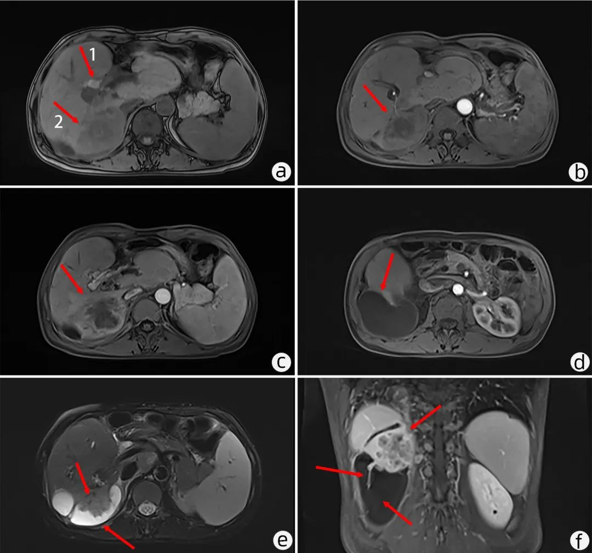
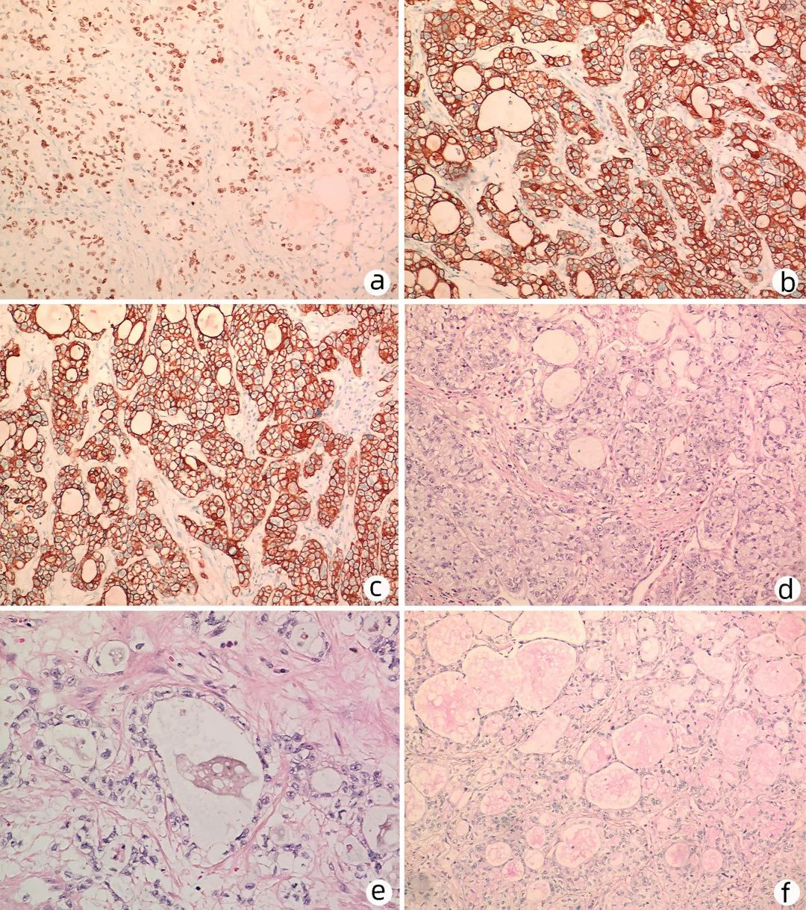
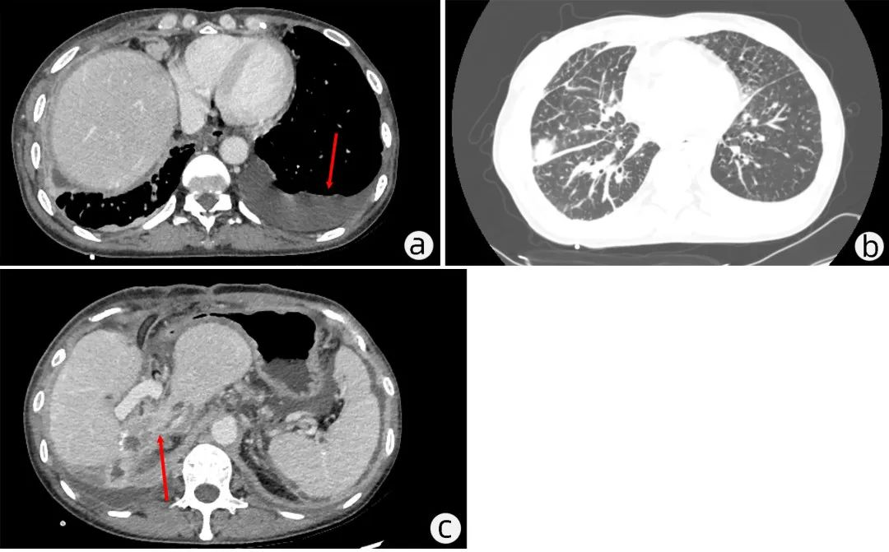

罕见病例｜原发性肝黏液表皮样癌1例报告
临床肝胆病杂志 来源：临床肝胆病杂志 发表于上海黏液表皮样癌是唾液腺最常见的恶性肿瘤。一项关于黏液表皮样癌的文献回顾分析发现，在8525例原发性黏液表皮样癌患者中，来源于腮腺4843例(56.8%)，硬腭1536例(18.0%)，其他部位占25.2%，包括食道、肛管、乳房皮肤、泪囊、胸腺、甲状腺、肺或子宫颈。原发性肝黏液表皮样癌极其罕见，目前文献报道的原发性肝黏液表皮样癌共18例，国内尚无相关报道，其发病机制及起源目前尚不明确，临床诊断较困难，易误诊误治。近期本院收治1例原发性肝黏液表皮样癌的病例，现就其发病机制、临床症状、影像学特点、病理学特点及治疗方式进行文献复习，希望通过其诊治经过及转归为原发性肝黏液表皮样癌的诊疗提供借鉴。
1病例资料
患者女性，47岁，因“右上腹疼痛20天”入院。18年前因胆囊结石及肝内胆管结石于本院行开腹肝左叶部分切除术及胆囊切除术，7年前再次因右肝内胆管结石及胆总管结石于本院行胆总管切开取石及胆道探查术。查体：皮肤巩膜未见黄染，腹部平坦，肋缘下及剑突下未扪及肝脏，腹部无压痛、反跳痛及肌紧张，移动性浊音阴性。肿瘤标志物：AFP及CEA均在正常范围内，CA19-9＞1000 U/mL，CA12~5 238.8 U/mL；肝功能：ALT 37 U/L，AST 25.0 U/L，总胆红素及直接、间接胆红素均在正常范围内；血常规无明显异常；无HBV、HCV感染。上腹部磁共振平扫+增强提示：肝脏形态不规则，肝左叶体积缩小；肝内胆管扩张，其内多发T1WI高信号(图1a)，T2WI低信号结节影，考虑结石，肝外胆管稍扩张；肝右后叶见约4.1 cm×6.7 cm的T1WI稍低信号为主团块(图1a)，增强扫描病灶呈不均匀强化，中心可见坏死灶(图1b、c)；肝脏右下方见局限性长T1、长T2信号影，增强扫描可见包膜及分叶样强化改变，与肝脏团块紧密相连，界限不清，囊肿内可见实性组织与肝脏团块相连(图1d~f)。
注：a，肝内胆管结石影(箭头1)，肝右后叶巨大占位(箭头2)；b，肝脏肿瘤不均匀强化(箭头)；c，肿瘤中心可见坏死灶(箭头)；d，肝脏右下方局限性液性灶(箭头)；e，肝囊肿与肝脏肿瘤紧密相连(箭头)；f，肝脏肿瘤实质突出于肝囊肿中(箭头)。
结合患者病史及辅助检查，初步诊断肝右后叶占位性病变伴肝周积液，合并肝内胆管结石，予以患者彩超引导下肝周积液穿刺引流，并行肝右后叶穿刺活检。活检病理示：肝右后叶病灶穿刺组织查见腺癌。免疫组化示肿瘤细胞：CK7(+)、CK19(+)、CK20 (-)、CDX2(-)、Villin(+)、SATB2(-)、MUC5AC (部分+)、HepPar1(-)、MLH1(+)、PMS2(+)、MSH2(+)、MSH6(+)、p53(强+，错义突变型)。考虑肝右后叶胆管癌可能性较大，排除手术禁忌证后予以右肝部分切除术及胆道探查术。术中见腹腔无明显腹水，肝周广泛粘连，胆囊及左肝缺失，胆总管稍粗，直径约1.2 cm，右肝内胆管多发结石，右肝后叶可见大小约7 cm×8 cm×7 cm实性病灶，质地稍硬，剖面呈不规则形状，色灰白，与周围组织无明显间隙，可见卫星病灶。术后病理示：肝右后叶癌，癌肿大小为7 cm×5.5 cm×4 cm，累及肝被膜，可见脉管侵犯；周围肝组织未见肝硬化改变；手术切缘组织中未见癌。显微镜下可见角化不明显的上皮细胞及中间细胞，免疫组化示：P63(+)(图2a)；并可见大量黏液分泌细胞，CK7及CK19(+)(图2b、c)；HE染色可见胞浆内及胞浆外黏液成分(图2d、e)；肿瘤特殊染色(PAS)阳性(图2f)，考虑诊断原发性肝黏液表皮样癌。
注: a，P63阳性(免疫组化，×100); b，CK7阳性(免疫组化，×100);c，CK19阳性(免疫组化，×100); d、e，胞浆内及胞浆外黏液成分(HE染色，d：×100；e：×200); f，PAS阳性(免疫组化，×100)。
患者术后第2天出现发热伴白细胞升高(44.1×109/L)，中性粒细胞比率96.8%，胸部CT示胸腔大量积液，遂予以彩超引导下右侧胸腔穿刺置管引流术，同时予以抗感染对症，患者康复后出院。术后40天患者因胸闷气促返院治疗，胸部CT示大量胸腔积液，右侧为主，予以胸腔穿刺引流及抗感染治疗后症状缓解出院。术后2个月因咳嗽、气促再次返院住院治疗，胸部CT示双侧胸腔积液，左侧较多，双下肺部分膨胀不全，左侧为甚(图3a)，双肺多发渗出(图3b)，考虑炎症；腹部增强CT示原术区少许环形强化结节影(图3c)，腹腔脂肪间隙、系膜筋膜腹膜肿胀，局部脂肪间隙新增不规则条索状影，考虑肿瘤复发及腹腔内多发转移，再次予以胸腔穿刺引流及抗感染治疗，患者肺部症状改善不明显并出现呼吸衰竭，患者家属拒绝继续住院治疗，自动出院2天后死亡。
注: a，左侧胸腔中-大量积液(箭头); b，双肺多发炎性灶(箭头)；c，原术区复发灶(箭头)。
2讨论
原发性肝黏液表皮样癌是一种极其罕见的肝脏恶性肿瘤，迄今为止文献所报道的原发性肝黏液表皮样癌仅18例，其病因和发病机制尚不明确，部分学者提出其可能起源于末端胆管，并伴有鳞状上皮化生，一些学者也提出可能起源于先天性囊肿，主要依据是肿瘤位于多个浆液-黏液性囊肿附近，与胆道系统无连接，囊肿内没有胆汁。
肝黏液表皮样癌临床症状无特异性，现有文献报道中多数患者是因腹痛(10例，55.6%)或者黄疸(4例，22.2%)就诊。实验室检查如肝肾功能及肿瘤标志物无特异性，在完善肿瘤标志物患者中，多数患者AFP均在正常范围内，2例患者AFP稍高，其中1例AFP为12.5 ng/mL，术前诊断为肝细胞癌，另1例AFP为20 ng/mL，术前诊断不明性质占位；4例患者CA19-9升高，其中1例患者术前诊断为肝脓肿，其余3例患者均诊断为胆管细胞癌，这符合对于肝脏占位性病变合并CA19-9升高的常规诊断思维，但是对于影像学表现不典型的肝占位性病变，在排除相关禁忌证后可予以患者肝脏占位性病变穿刺活检明确病变性质。
黏液表皮样癌的诊断基于病理检查发现病变组织存在不同比例混合的上皮细胞、黏液分泌细胞及中间细胞，免疫组化检查CK5/6、CK7、P63、CA125呈阳性，肿瘤特殊染色AB/PAS阳性可协助诊断。本例患者术前穿刺活检镜下图像与腺癌十分相似，大多为中间细胞，黏液细胞较少、上皮细胞不典型，穿刺组织破碎，且原发性肝黏液表皮样癌罕见，术前误诊为胆管癌。术后活检镜下可见角化不明显的上皮细胞及中间细胞，加做PAS染色及P63免疫组化检查，结果阳性，遂修正诊断为原发性肝黏液表皮样癌。再次查看术前病理切片，发现显微镜下可见角化不明显的上皮细胞、黏液分泌细胞及胞浆外黏液，若术前行P63染色及PAS染色，可能观察到上皮细胞、中间细胞、黏液分泌细胞及所分泌的黏液。
肝黏液表皮样癌的影像学表现无特异性，部分病例报告肿瘤合并肝囊肿，肿瘤中心常坏死，边缘呈不规则环形强化，再次分析术前磁共振结果，发现肝周积液是感染性积液可能性较小，结合既往文献报道，考虑肝黏液表皮样癌合并肝囊肿。虽然没有直接证据表明肝脏黏液表皮样癌起源于肝囊肿的上皮，但是肝脏右下方囊肿与肝脏团块紧密相连，界限不清，且囊肿内可见实性组织与肝脏团块相连，推测肝黏液表皮样癌与囊肿组织密切相关。
一般情况下，黏液表皮样癌是一种生长缓慢的肿瘤，其预后优于普通恶性肿瘤，但是原发性肝黏液表皮样癌恶性程度较高、预后极差，多数患者术后在较短时间内死于并发症及肿瘤复发和转移。治疗方面，外科手术是黏液表皮样癌的主要治疗方案，放疗、化疗有一定的效果。近年来，分子靶向及免疫治疗成为黏液表皮样癌的研究热点。但现有报道表明，化疗对于肝黏液表皮样癌的预后无明显改善，目前对于肝黏液表皮样癌尚无标准的治疗方案。最新报道1例原发性肝黏液表皮样癌合并CRTC1-MAML2融合的患者行手术治疗联合放、化疗，术后随访10年仍存活，对原发性肝黏液表皮样癌的治疗提供了新思路。
综上，原发性肝脏黏液表皮样癌是一种极其罕见的肝脏恶性肿瘤，因其特殊的发病部位及病理学特征，穿刺活检及免疫组化有助于其准确诊断。肝黏液表皮样癌与肝囊肿密切相关，但其病因和发病机制、与肝囊肿的相互作用等尚需进一步研究。对于肝脏不典型占位性病变合并肝囊肿，应注意原发性肝黏液表皮样癌的可能性。